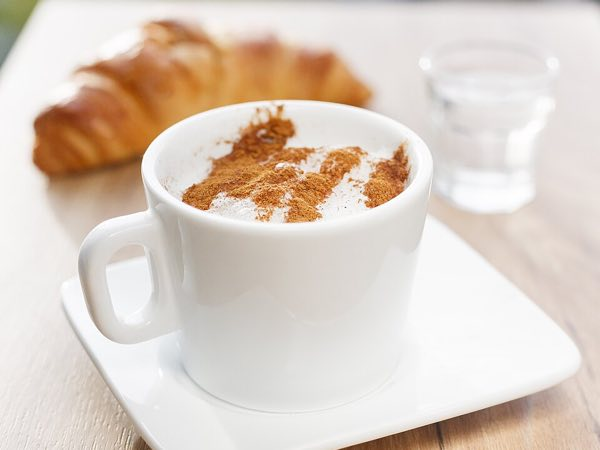
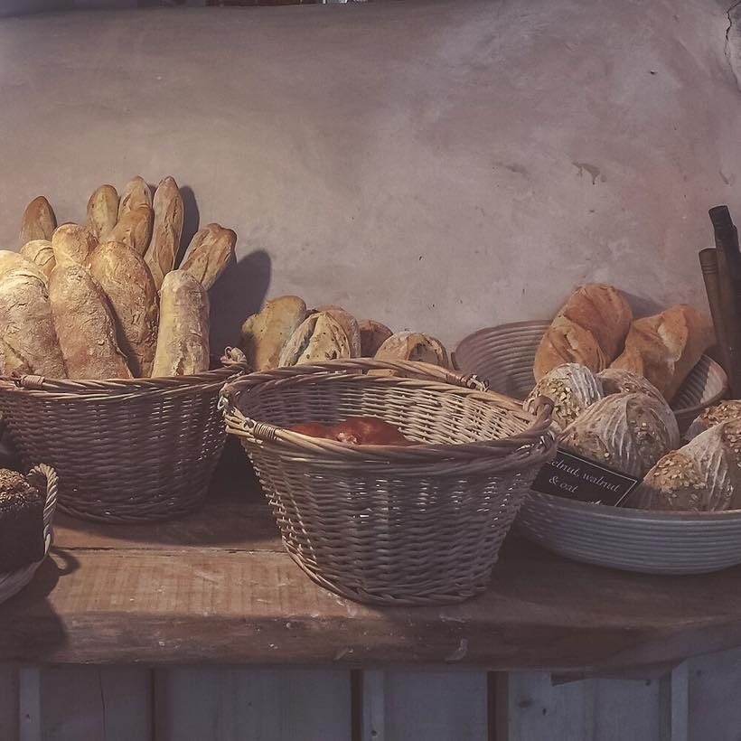
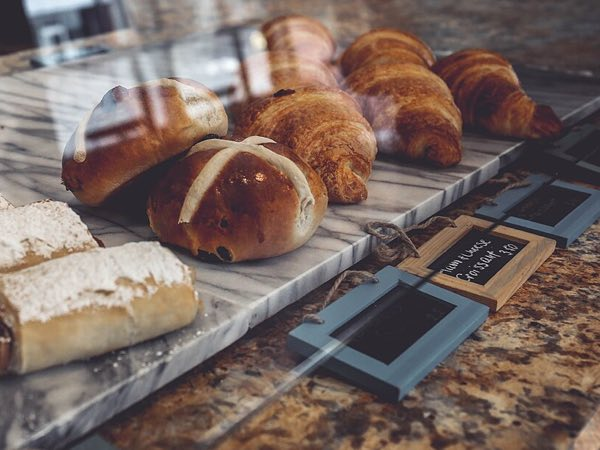
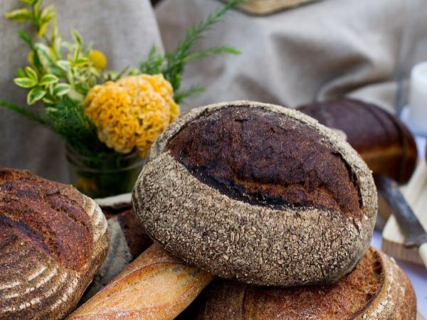

Cinnamon cappuccino
Milky coffee with a snowfall of cinnamon. Try it with a croissant.
€3.90

We bake everything here, from five in the morning. Come in, have a cup of something warm and stay a while.
Open Tuesday to Sunday
VG vegan V vegetarian

Milky coffee with a snowfall of cinnamon. Try it with a croissant.
€3.90

Soft buns with raisins and a cross of icing. Only on Fridays, so be quick!
€2.80

A big round loaf, rolled in seeds before it goes in the oven. Still warm at 8:00.
€5.40
Rosa makes the bread. Benny makes the cakes, and the jokes. Every night the dough rests, and every morning the whole street smells of cinnamon.